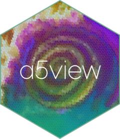

Changelog
a5view (development version)
Pyramids built by a5pyramid
- Pyramids are built and written by a5pyramid, a new import: a Rust engine that builds every level in parallel, on
a5pyramid::a5pyramid_threads()threads. On 439,276 cells with four colour channels and a fill value, building and writing a pyramid takes 0.5 s instead of 4.1 s, and the parquet file is about 30% smaller.a5_view(),a5_view_update()anda5_build_pyramid()take the same arguments as before. -
Breaking: pyramid files are in a5pyramid’s format (its
FORMAT.md), which any a5pyramid reader can open; in R,a5pyramid::a5_pyramid_info()anda5pyramid::a5_read_pyramid()read them.a5_view_pyramid()refuses files written by a5view 0.3 and asks for them to be rebuilt witha5_build_pyramid(). In the new format:- each row group is one tile, a run of consecutive cell ids split along the A5 hierarchy, so sparse data no longer makes many tiny row groups;
- row group boxes come from the cells’ boundaries rather than padded centres, and a box across the antimeridian crosses it (
west > east) instead of covering the whole globe, so such tiles are fetched only in view; - the index is the
a5pyramidmetadata key (wasa5view_row_groups), the LOD column islod(was_lod), and a newncellcolumn counts the cells each row summarises.
-
Breaking: a pyramid needs each cell once. Duplicated cells, which were drawn on top of each other and counted twice in their parents’ means, are an error that suggests combining them or drawing them with
aggregate = "none". -
"rep_child"scales each payload column by its standard deviation before measuring each child’s distance to its parent’s mean, so a fill value in large units no longer outweighs the colour channels, and ties go to the child with the lowest cell id rather than to rounding. - Pyramid levels could draw nothing when cells had outlines (the default
border): zooming out from the initial view ofs2_santiagoshowed no cells at LOD 16 and coarser. Outlined tiles were drawn with deck.gl’sPolygonLayer, which with binary geometry finds no outlines and then draws neither outlines nor fill, and outlined and plain layers shared ids, so a level once outlined stayed blank. Tiles now draw aSolidPolygonLayerand aPathLayerof outlines, under ids that include the outline state. - A
lod_stepreaching below LOD 2 no longer errors (“wrong sign in ‘by’ argument”); the pyramid then holds the data resolution only. - Internals: the lazy renderer reads the a5pyramid index and draws every level as tiles, one per row group, decoding the row groups of levels of up to 10,000 cells as soon as the file opens. The
a5view-tilingdependency is versioned 0.3.0.9000, so browsers do not reuse the old script.
Other changes
-
geom_a5()no longer warns “closedwas renamedclosed_ring” with a5R 1.0.0: it relies ona5_cell_to_boundary_xy()’s open-ring default instead of naming the argument. - The example apps use
a5R::a5_threads(), which replacesa5_set_threads()in a5R 0.9.9.9006.
a5view 0.3.0
Breaking changes
- a5view now draws A5 1.0 cell ids. A5 1.0 gives every cell a new id, so the versions do not mix: a5view 0.2.x cannot draw 1.0 ids, and 0.3.0 cannot draw ids written before 1.0. An old id is still a valid 1.0 cell, but in a different place, and nothing in the id records which version wrote it, so a5view cannot detect old ids and draws them in the wrong place without an error. Convert stored ids once with
a5R::a5_migrate(), or re-index from coordinates. - Requires a5R >= 0.9.9.9001 (
Remotes: belian-earth/a5R): A5 1.0, anda5_cell_to_boundary_xy()forgeom_a5(). - Pyramid LODs now group leaves by supercell (
a5R::a5_cell_to_supercell(), the coarse cell containing a leaf’s centre) instead of by index parent. The A5 1.0 index hierarchy is not spatially nested, so index parents would draw aggregates away from their leaves. Pyramids built witha5_build_pyramid()by 0.2.x hold pre-1.0 ids and must be rebuilt. - Pyramid files name the cell id column
cell(waspentagon) and record the A5 index version asa5_index = "1.0"in their parquet metadata.a5_view_pyramid()refuses files without it.
New features
a5_view(),a5_view_update(),a5_build_pyramid()andgeom_a5()accept ana5_covering, as returned bya5_grid_disk(),a5_spherical_cap()anda5_polygon_to_cells()in a5R 1.0, alone or as a data frame column. It is drawn as the cells it stores, at their mixed resolutions; uncompact it first witha5R::a5_uncompact()to draw its cells at one resolution. Widget tooltips find cells at every resolution present. Pyramids still need cells at one resolution and say so.New
geom_a5()draws A5 cells in ggplot2 from a cell column:ggplot(df, aes(cell = cell, fill = value)) + geom_a5(). It works withcoord_cartesian(),coord_quickmap()andcoord_sf(), so it combines withgeom_sf()layers in any projection, sharing scales, limits and graticules. Likegeom_sf(), it brings a defaultcoord_sf()(crs from the plot’s sf layers, else EPSG:4326), so maps keep a fixed geographic aspect ratio unless another coord is added. ggplot2 and sf are imported.geom_a5()is built for large cell sets. One row per cell goes through ggplot2, and outlines are only generated at draw time. Withrender = "auto"(the default) cells smaller than about three device pixels are drawn as a raster: each pixel takes the colour of the cell containing its centre, so the cost depends on the image size, not the number of cells.render = "vector"andrender = "raster"force a mode. Cells crossing the antimeridian are split at +/-180 degrees.cells_rgb()andcells_pca_rgb()return classa5_rgb, an integer vector that prints as hex colours. Mapped tofillingeom_a5(), it draws as colours with no scale or legend.a5_view()treats it as before.New dataset
s2_santiago: 15,626 resolution-18 cells of a cloud-free 2023 Sentinel-2 mosaic over central Santiago, Chile (blue, green, red and near-infrared bands, CC-BY 4.0), for examples of true-colour composites and colour mapping.data-raw/s2_santiago.Rrebuilds it.The README presents a5view as the visualisation companion to a5R, covering ggplot2 and interactive maps, with rendered examples from
s2_santiago.
Bug fixes
- On the dark and OSM basemaps, cells drew beneath roads, bridges and buildings, because those styles place a label layer low in the stack and cells were inserted below the first label layer. Cells now go below the style’s closing run of label layers only.
Internals
- Vendored a5-js is 1.0.0 (
inst/htmlwidgets/lib/a5-js/a5.js). The version is set once, inbridge.js, which also feeds the CDN fallback used by self-contained HTML and the pyramid tile worker. - deck.gl 9.4 bundles a5-js 0.10 inside its
A5Layer. Cells and the hover highlight now draw through a small subclass (lib/a5view-tiling/a5-layer.js) that takes boundaries from the vendored a5-js 1.0. It can be dropped once deck.gl moves to a5-js 1.0. - New tests check the vendored a5-js against a5R:
cellToBoundary()andlonLatToCell()agree witha5_cell_to_boundary()anda5_lonlat_to_cell()at resolutions 0 to 18. -
geom_a5()takes cell outlines froma5R::a5_cell_to_boundary_xy(), which returns every cell’s vertices as flat vectors without building a geometry per cell.